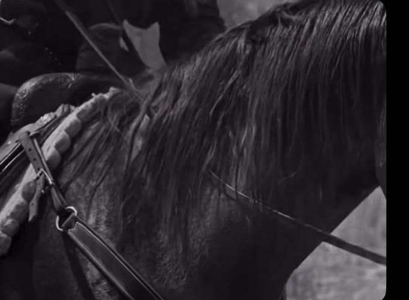
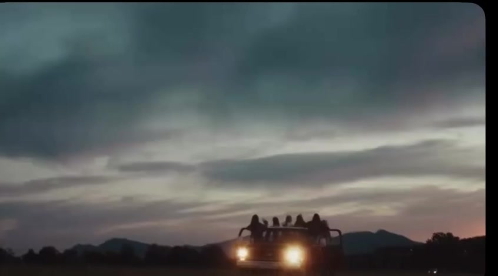

JP Silva
Filmmaker, producer, photographer Austin, Texas





JP Silva is a filmmaker, producer and photographer in Austin, Texas, working across film, live music and the long road between shows. He was born in Bauru, São Paulo, moved to the United States as a teenager, and still looks for the same thing in every frame: the honest moment, not the loud one.
Bauru, São Paulo to Austin, Texassince 2025

Index Selected work
Enquiries
- Instagram @jp.media
- enabled at launch